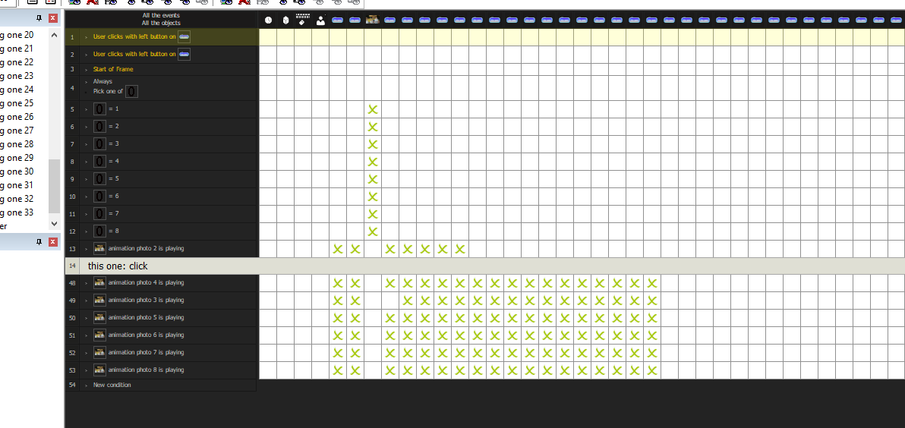
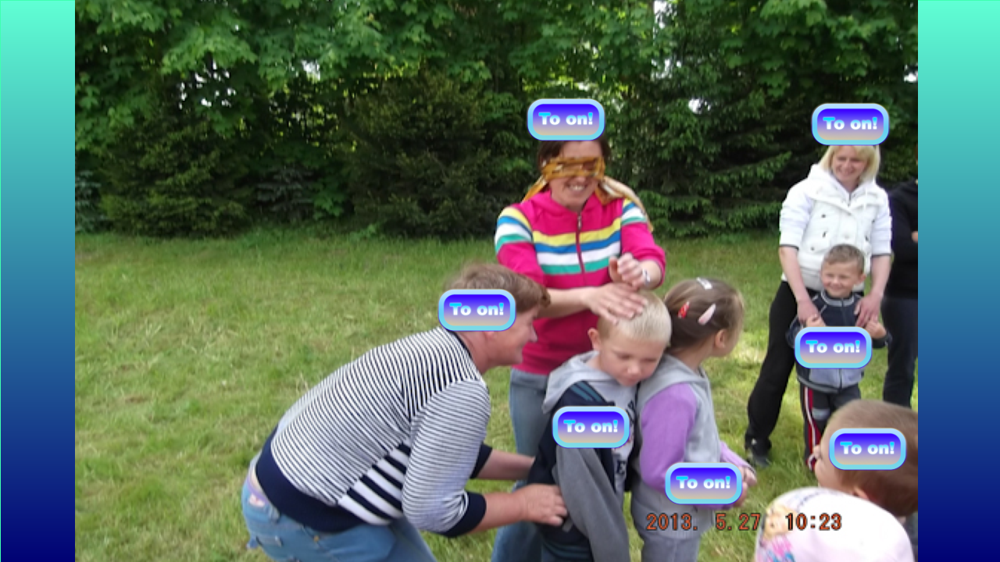
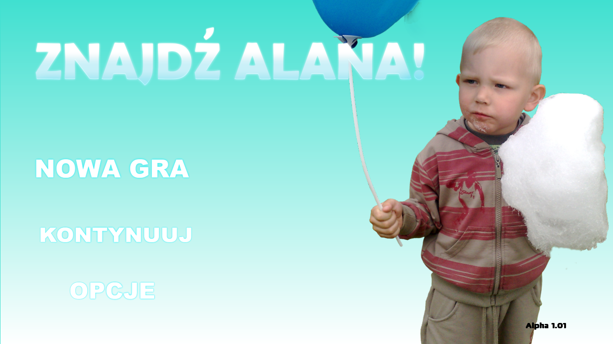
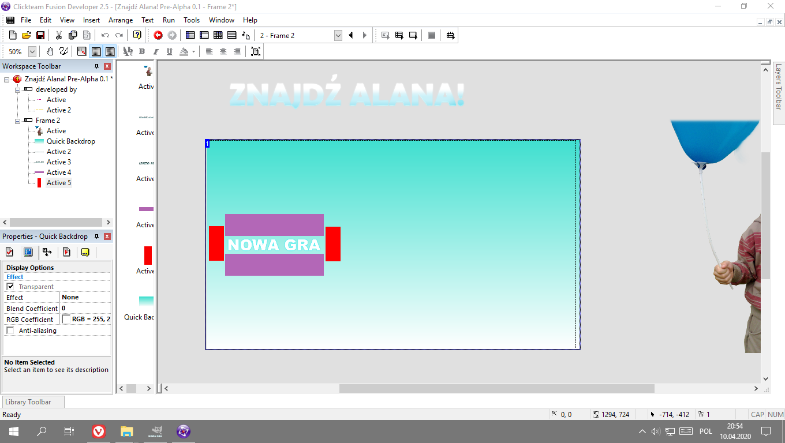

Brakuje Ci zabawy w klasycznej grze? Znaleźliśmy na to rozwiązanie! „Znajdź Alana! Premium” to ostatnie i najlepsze wydanie Znajdź Alana! na konsolę Nintendo Wii. Szukaj gry w dobrych sklepach lub zakup cyfrowo poprzez sklep Nintendo. Miłej zabawy!
Alpha 2.11
Poziom bardzo łatwy w końcu skompletowany. Odświeżyłem też nieco menu i opróżniłem je z niepotrzebnych opcji.

Making of Alpha 2.10-2.11
Jestem w trakcie robienia poprawek do ostatniej wersji „Znajdź Alana!”. Moim celem jest rozszerzenie grywalności i ilości zdjęć. Alpha 2.11 już niedługo!

Alpha 2.10 - grywalność na swoim miejscu
W wersji Alpha 2.10 zrobiłem grywalny, testowy poziom. Jest w nim kilka zdjęć Alana Śliwusia.

Alpha 1.01
Wersja testowa Alpha 1.01 już dostępna!

Znajdź Alana! na komputery PC już wkrótce!
Jest to dobra wiadomość dla tych którzy nie posiadają Nintendo Wii lub DS. Pierwsza wersja testowa pojawi się na stronie już za chwilę.
Znajdź Alana! Easter Edition
Z okazji nadchodzących świąt wielkanocnych szykuję niezwykle wielką aktualizację do gry „Znajdź Alana!”. Będzie ona dostępna zarówno na wersję Nintendo Wii jak i Nintendo DS.